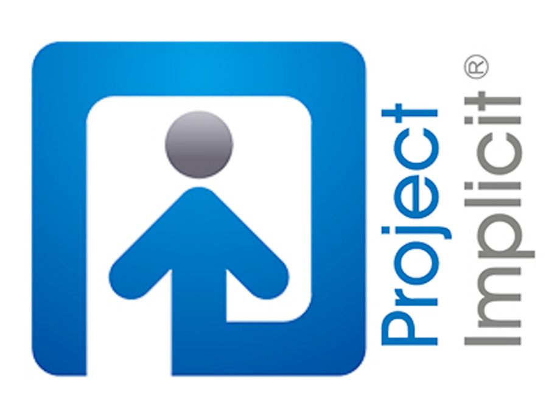

unconscious
bias journey
tips & tricks

| tip: get involved with a reading group | anonymous reflection |
|---|---|
| Check out the events page in the community hub and see if there's a reading group you could join. If not, why not reach out to your colleagues and make one? |
"When I was on the unconscious bias journey I found it really helpful to remember that unconscious biases are a product of evolution, and that everyone has them, but that doesn't mean they can't or shouldn't be challenged and changed. I found it reassuring to know that everyone needs help scrutinising their biases. I found being able to set both private and public intentions really helpful for this journey." |
| how to identify your own unconscious biases | tips especially for recruiters |
| Try this test, created by researchers for Project Implicit at Harvard University. By asking you to click on associations as fast as you can, and by measuring the speed with which you click, it is able to bypass your conscious brain and reveal unconscious biases.  |
Take a look at this article for tips and the latest research regarding hiring practises. Unconscious bias can severely affect who gets recruited and who doesn't. |
| anonymous reflection | tip: apologise when you get it wrong |
| "When I was setting an intention on challenging unconscious bias every time I hear it in the office, I found this tip from '50 Ways to Fight Bias' useful (in this case it was about someone criticising a female leader for being too assertive) :'When you hear someone criticize a woman for asserting herself, ask them about it: “That’s interesting. Would you have that reaction if a man did the same thing?” It may also be worth pointing out that being focused and decisive about moving the business forward is what’s expected of leaders.' I have found that asking people to clarify what they mean or asking them why they think that is a neutral but effective way to point out biases." | We all make mistakes. In times of stress we are particularly prone to making snap judgements. One of the most important steps on your journey is to be aware of your biases and behaviour and to acknowledge when you get it wrong. |
| load more... | |